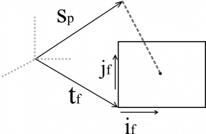

2B Koordinatlardan 3B Koordinatların Yaklaşık Hesabı
Bu yazıdaki formülizasyon Tomasi ve Kanade [1] ve Morita ve Kanade [2] kaynaklarından yapılmıştır. Farklı açıdan örneklenmiş 2B nokta konumlarından 3B bilgisini çıkarmayı hedefler. 2B resimlerden tutarlı nirengi noktaları bulunduğu durumda 3B'lu koordinatların hesabına uygulanabilir.
Elimizde iki farklı açıdan alınmış resim olsun ve üstlerinde karşılıklı referans noktaları işaretlenmiş olsun. Kolaylık olsun diye, bu noktaların iki resimde de önde göründüğünü, resim içindeki nesnelerce örtülmediğini varsayalım. $F$ resim sayısı, $P$ ise o resimdeki nokta sayısı olmak üzere, $ u_{fp}, v_{fp}, \ \ f = 1,\dots,F, \ \ p = 1,\dots,P$ noktaların imge düzlemlerindeki koordinat bilgilerini tutsun. Problemde noktaların 3B bilgileri bilinmemekte ve en yaklaşık olarak hesaplanmak istenmekte.
$$ \mathbf{s}_{p} = \left( \begin{array}{r} x_p \\ y_p \\ z_p \end{array}\right)$$
Bilinen noktaların matris şeklinde gösterimlerini şu şekilde yapalım:
$$\mathbf{U} = \left(u_{fp}\right)_{F \times P}, \ \mathbf{V} = \left(v_{fp}\right)_{F \times P}, \ \mathbf{W} = \left[\begin{array}{c} \mathbf{U} \\ \mathbf{V} \end{array} \right]_{2F \times P}$$
Ortalamayı çıkarıp şunu elde edelim:
$$\mathbf{\tilde{U}} = \left(\tilde{u}_{fp}\right)_{F \times P}, \ \mathbf{\tilde{V}} = \left(\mathbf{v}_{fp}\right)_{F \times P}, \ \mathbf{\tilde{W}} = \left[\begin{array}{c} \mathbf{\tilde{U}} \\ \mathbf{\tilde{V}} \end{array} \right]_{2F \times P}$$
öyle ki
\begin{align}
a_f &= \frac{1}{P} \sum\limits_{p=1}^P u_{fp} \\
b_f &= \frac{1}{P} \sum\limits_{p=1}^P v_{fp}
\end{align}
ve
\begin{align}
\mathbf{\tilde{u}}_{fp} &= \mathbf{u}_{fp} - a_f \\
\mathbf{\tilde{v}}_{fp} &= \mathbf{v}_{fp} - b_f, \ \ f = 1,\dots,F, \ \ p = 1,\dots,P
\end{align}
$\mathbf{\tilde{W}}$ kayıtlanmış ölçüm matrisi olarak tanımlanmaktadır ve çarpanlara ayırmada kullanılır (bkz. Tekil Değer Ayrışması / Singular Value Decomposition / SVD).
Biliyoruz ki;

\begin{align}
\frac{1}{P} \sum\limits_{p=1}^P \mathbf{s}_{p} &= 0 \\
u_{fp} &= \mathbf{i}_f^T(\mathbf{s}_p - \mathbf{t}_f) \\
v_{fp} &= \mathbf{j}_f^T(\mathbf{s}_p - \mathbf{t}_f)
\end{align}
Öyleyse şunu yazabiliriz,
\begin{align}
\tilde{u_{fp}} &= u_{fp} - a_f \\
&= \mathbf{i}_f^T(\mathbf{s}_p - \mathbf{t}_f) - \frac{1}{P} \sum\limits_{q=1}^P \mathbf{i}_f^T(\mathbf{s}_q - \mathbf{t}_f)\\
&= \mathbf{i}_f^T\left(\mathbf{s}_p - \frac{1}{P} \sum\limits_{q=1}^P \mathbf{s}_q\right)\\
&= \mathbf{i}_f^T\left(\mathbf{s}_p - 0\right)\\
&= \mathbf{i}_f^T\mathbf{s}_p
\end{align}
Benzer şekilde,
\begin{align}
\tilde{v_{fp}} &= \mathbf{j}_f^T\mathbf{s}_p
\end{align}
Yazdıklarımızı matris formunda bir araya getirirsek, alttaki elde edilir:
\begin{equation}
\mathbf{\tilde{W}} = \left[\begin{array}{c} \mathbf{\tilde{U}} \\ \mathbf{\tilde{V}} \end{array} \right] = \left[\begin{array}{c} i_1^T \\ i_2^T \\ \vdots \\ i_f^T \\ j_1^T \\ j_2^T \\ \vdots \\ j_f^T \end{array} \right]_{2F\times 3} \left[\begin{array}{ccc} \mathbf{s}_1 & \dots & \mathbf{s}_P \end{array} \right]_{3 \times P}
\end{equation}
Şimdi de $\mathbf{\tilde{W}}$ üstünde SVD uygulayalım:
\begin{equation}
\mathbf{\tilde{W}} = \mathbf{O}_1 \mathbf{\Sigma} \mathbf{O}_2
\end{equation}
$\mathbf{\tilde{W}}$ 3. dereceden bir matristir, öyleyse
\begin{equation}
\mathbf{\tilde{W}} = \mathbf{O}^{'}_1 \mathbf{\Sigma}^{'} \mathbf{O}^{'}_2
\end{equation}
ve
\begin{align}
\mathbf{O}_1 &= \left[\begin{array}{ccc} \mathbf{O}^{'}_1 & \mathbf{O}^{''}_1 \end{array} \right] \\
\mathbf{O}_2 &= \left[\begin{array}{c} \mathbf{O}^{'}_2 \\ \mathbf{O}^{''}_2 \end{array} \right] \\
\mathbf{\Sigma} &= \left[\begin{array}{cc} \mathbf{\Sigma}^{'} & \mathbf{0} \\ \mathbf{0} & \mathbf{\Sigma}^{''} \end{array} \right]
\end{align}
öyle ki $\mathbf{O}^{'}_1$, $\mathbf{O}^{'}_2$ ve $\mathbf{\Sigma}^{'}$ $3\times3$'lüktür.
$\mathbf{\tilde{W}}$'yı şu şekilde düzenleyelim:
\begin{equation}
\mathbf{\tilde{W}} = \mathbf{\hat{R}}\mathbf{\hat{S}}
\end{equation}
öyle ki
\begin{align}
\mathbf{\hat{R}} &= \mathbf{O}^{'}_1 \left[\mathbf{\Sigma}^{'}\right]^{\frac{1}{2}} \\
\mathbf{\hat{S}} &= \left[\mathbf{\Sigma}^{'}\right]^{\frac{1}{2}} \mathbf{O}^{'}_2
\end{align}
$\mathbf{\hat{R}}\mathbf{Q}^T\mathbf{Q}\mathbf{\hat{S}} = \mathbf{\hat{R}}\mathbf{\hat{S}}$ eşitliğinden dolayı ilgilendiğimiz $\mathbf{\hat{R}}$ ve $\mathbf{\hat{S}}$ değerleri gerçek değerlerin doğrusal dönüşümleridir.
$\mathbf{i}_f$ ve $\mathbf{j}_f$ üstünde kısıtlama yaratan $\mathbf{Q}$ değerini bulalım.
Kısıtlamalar şu şekilde sıralanabilir:
\begin{align}
\|\mathbf{i}_f\| = 1 \\
\|\mathbf{j}_f\| = 1 \\
\mathbf{i}_f^T \mathbf{j}_f = 0 \\
\mathbf{i}_f \mathbf{Q}\mathbf{Q}^T \mathbf{i}_f = 1 \\
\mathbf{j}_f \mathbf{Q}\mathbf{Q}^T \mathbf{j}_f = 1 \\
\mathbf{i}_f \mathbf{Q}\mathbf{Q}^T \mathbf{j}_f = 0
\end{align}
$\mathbf{Q}$ için veri uydurmaya (data fitting) ihtiyacımız olacak.
\begin{align}
\mathbf{L} = \mathbf{Q}\mathbf{Q}^T = \left[\begin{array}{ccc} l_1 & l_2 & l_3 \\ l_2 & l_4 & l_5 \\ l_3 & l_5 & l_6\end{array} \right]
\end{align}
Şimdi, önceki üç denklem şu hale geldi:
\begin{align}
\mathbf{G}\mathbf{l} = \mathbf{c}
\end{align}
öyle ki
\begin{align}
\mathbf{G} &= \left[ \begin{array}{c}
g^T (\mathbf{i}_1,\mathbf{i}_1) \\ \vdots \\ g^T (\mathbf{i}_F,\mathbf{i}_F) \\
g^T (\mathbf{j}_1,\mathbf{j}_1) \\ \vdots \\ g^T (\mathbf{j}_F,\mathbf{j}_F) \\
g^T (\mathbf{i}_1,\mathbf{j}_1) \\ \vdots \\ g^T (\mathbf{i}_F,\mathbf{j}_F)
\end{array}\right]_{3F\times6} \\
\mathbf{l} &= \left[ \begin{array}{c} l_1 \\ l_2 \\ l_3 \\ l_4 \\ l_5 \\ l_6\end{array}\right]_{6\times1} \\
\mathbf{c} &= \left[ \begin{array}{c} \mathbf{1}_{2F\times1} \\ \mathbf{0}_{F\times1}
\end{array}\right]_{3F\times1}
\end{align}
ve $g^T(\mathbf{x},\mathbf{y})$ fonksiyonunu
\begin{align}g^T(\mathbf{x},\mathbf{y}) = \left( \begin{array}{cccccc}
x_1 y_1 & x_1 y_2 + x_2 y_1 & x_1 y_3 + x_3 y_1 & x_2 y_2 & x_2 y_3 + x_3 y_2 & x_3 y_3\end{array}
\right)\end{align}
biçiminde tanımladık.
Öyleyse, $\mathbf{l}$ şu biçimi alır
$$\mathbf{l} = \left( \mathbf{G}^T\mathbf{G} \right)^{-1} \mathbf{G} \mathbf{c}$$
Yalancı-ters (pseudo-inverse) ile $\mathbf{l}$'yi bulduğumuzda öz ayrışım (eigen decomposition) $\mathbf{Q}$'yu verecektir. Son olarak,
\begin{align}
\mathbf{R} = \mathbf{\hat{R}}\mathbf{Q}\\
\mathbf{S} = \mathbf{Q}^T\mathbf{\hat{R}}
\end{align}
denklemleri hesaplanabilir ve $\mathbf{S}$ istediğimiz 3B bilgilerini içerir.
Kaynakça
[1] Carlo Tomasi ve Takeo Kanade. Detection and Tracking of Point Features, 1991.
[2] Toshihiko Morita ve Takeo Kanade. A Sequential Factorization Method for Recovering Shape and Motion From Image Streams. IEEE Transactions on Pattern Analysis and Machine Intelligence, 19:858–867, 1997.